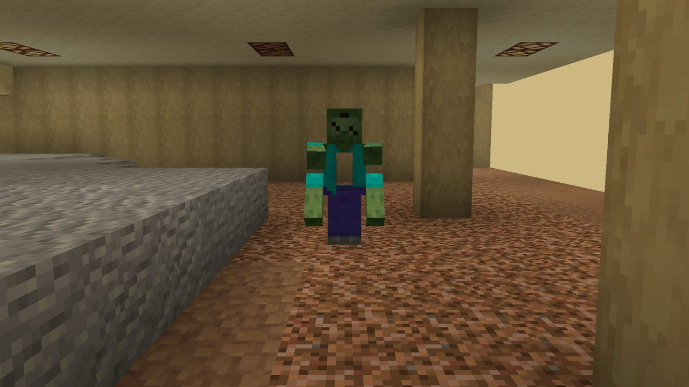
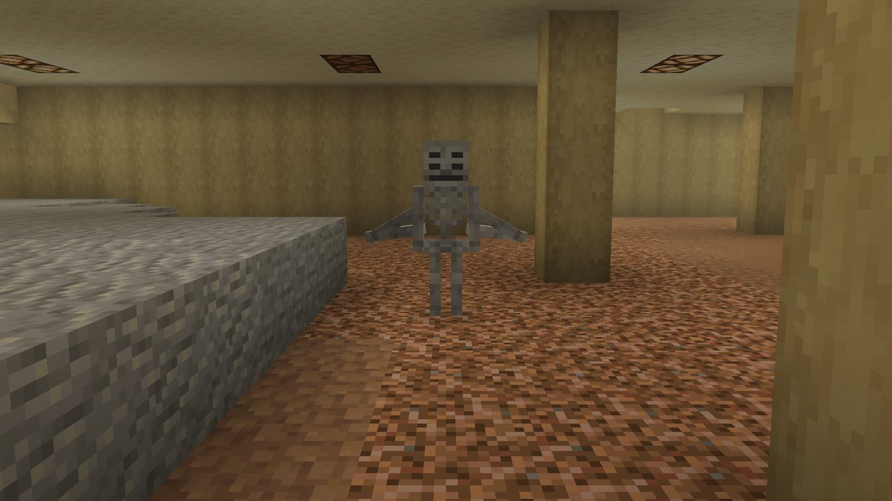
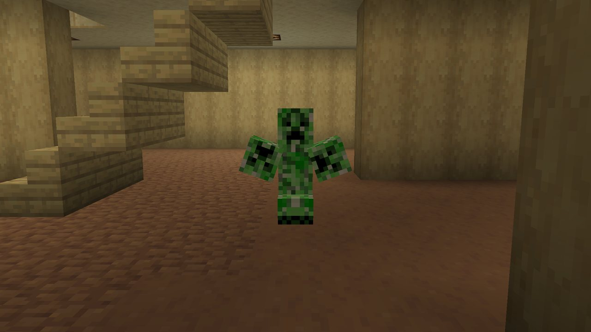
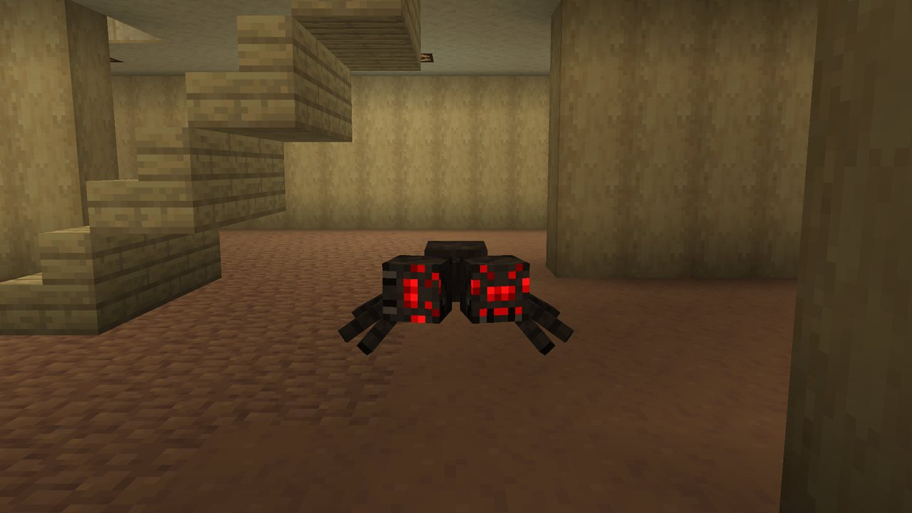
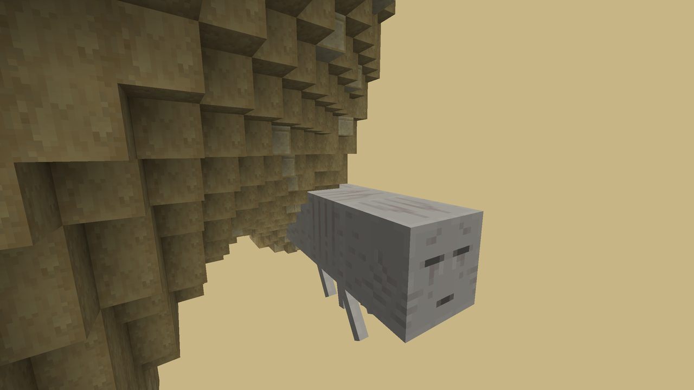
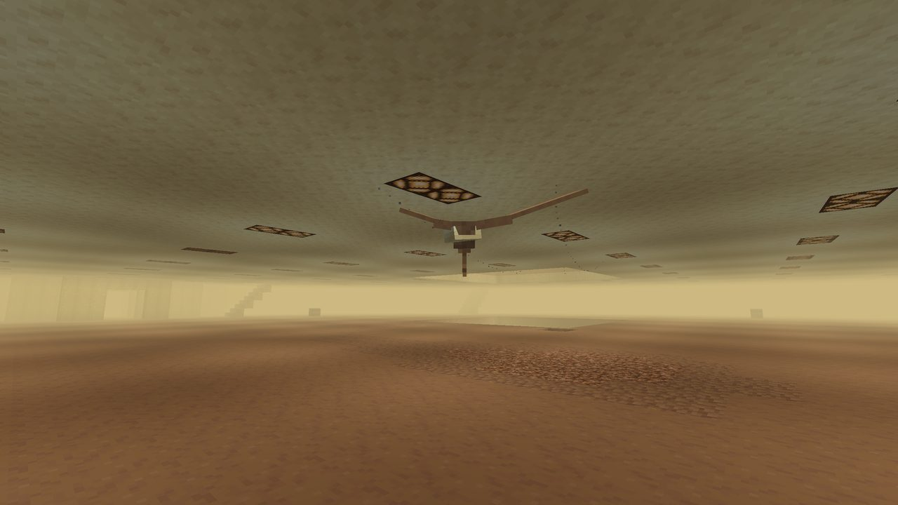
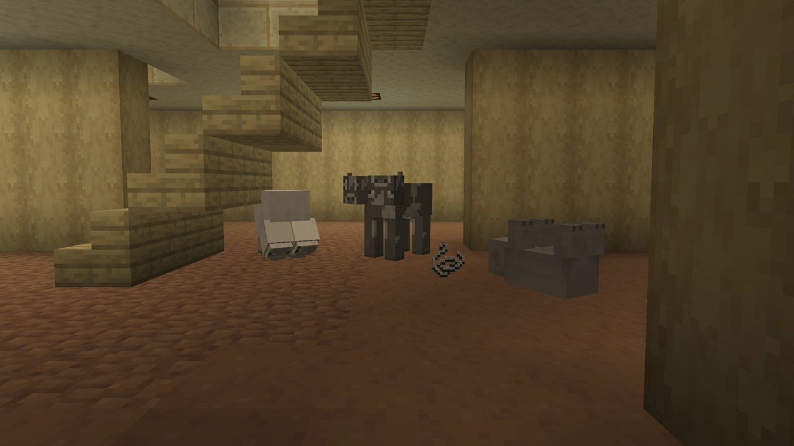
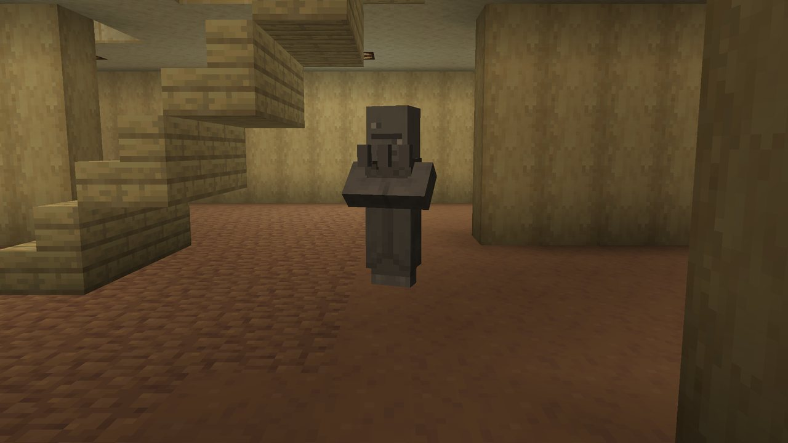
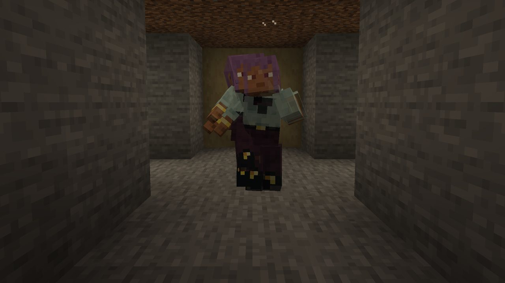

Home » What lives there » Mobs
Mobs
Everything that lives in The Remembering is something it remembered wrong.
Vivid mobs#
Vivids are hostile mobs remembered wrong. They only come out when the lights go out: they spawn in The Remembering during a blackout, and any zombie, skeleton, creeper, spider, ghast or phantom that wanders in becomes one.
- Each one is misremembered as it spawns: two times in three it is bigger and tougher than the real mob, otherwise smaller and weaker.
- Each kind has four bodies, made from the real mob's own model and skin cut up and put back together wrong.
- Their voices are the vanilla sounds, reworked and echoing, and kept low: they call about every 12 seconds, half as often as the real mobs, and quietly. Hurt and death sounds and the attack warnings (creeper fuse, ghast fireball, skeleton shot, phantom swoop, a zombie at a door) stay louder, so a fight is easy to hear coming.
| Mob | Bodies | Drops |
|---|---|---|
| Vivid Zombie | Doorway, brute, crawler, fused | Rotten flesh, iron ingots, copper ingots |
| Vivid Skeleton | Many, twin, bridge, held | Bones, arrows, redstone, iron ingots |
| Vivid Creeper | Cluster, twisted, six-legged, bent | Gunpowder, copper ingots, redstone |
| Vivid Spider | Two-headed, centipede, rearing, stacked | String, a spider eye, copper ingots |




A way out in every drop
Vivids drop iron, copper and redstone on purpose: kill a few in a blackout and you have most of a door.
Vivid flyers#
Two Vivids fly. They turn up anywhere in The Remembering with enough open air to fly in, at the same rate at every depth, so you meet most of them in the geometric level (the gyroid halls and the Menger lattice), where the air is:
- Vivid Ghast: cruises low, 4 to 8 blocks over the ground. Every 8 to 15 seconds it glides down beside a player near it, hangs there for 2 to 3 seconds within sword reach, then climbs back. It shoots wind charges, only from cruise height. Bodies: cluster, melted, split, bearded. Drops ghast tears and gunpowder; killed by a player, a 5% chance of the music disc Day One, plus 2% for each level of Looting.
- Vivid Phantom: flies in the air between floor and ceiling, circling under the ceiling over its target. Bodies: twin, centipede, bones, folded. Drops phantom membranes when killed by a player.
About once a minute there is a 1 in 16 chance one comes for you, 24 to 48 blocks away, unless a flyer is already within 128 blocks (only with mob spawning on and not on Peaceful). A ghast needs open air about 7 by 10 by 7 blocks and a phantom about 11 by 12 by 11, so a plain office floor is too low for them.


Hollow mobs#
Hollows are animals remembered as statues: the Hollow Cow, Hollow Sheep, Hollow Pig, Hollow Chicken and Hollow Villager. They have no AI, never move and shatter when hit. They stand in small herds of one to three across the floors, and any cow, sheep, pig, chicken, villager or wandering trader that enters The Remembering becomes one. Each kind has four bodies too.


Still Lifes#
A Still Life is a copy of a player who has been inside, wearing their skin. They only move while nobody is looking at them.
- Every two minutes there is a one in four chance a Still Life appears near each player inside who has none within 96 blocks.
- They copy how a player plays too. Players who kill animals and villagers or hit other players are remembered as violent, and their Still Lifes attack.
- Every hit or interaction takes a limb off. The last one drops a Still Life Head wearing the copied player's skin, and gives the advancement Still Life.
- You need a Still Life Head to pin the Keeper.
- Server owners can turn them off with
stillLifes.enabled.

The Keeper#
The Remembering's one hunter has its own page: The Keeper.